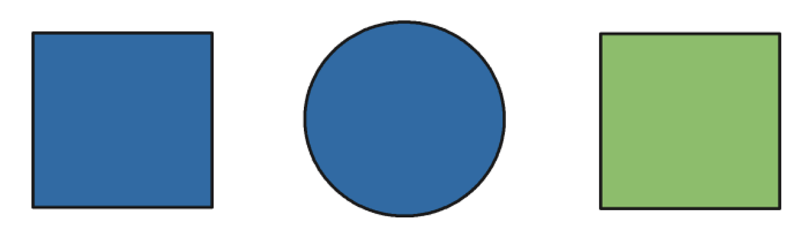

Sheet 1.1: Vanilla RSA
Contents
Sheet 1.1: Vanilla RSA#
Author: Michael Franke
This is a (numpy-based) Python implementation of a vanilla Rational Speech Act model for a reference game.
The same model is also covered in chapter 1 of problang.org.
Packages#
The `numpy` package is used here in order to implement the RSA model using vector and matrix computation. Additionally, we use the `seaborn` package for visualizing the model’s predictions. The input for the `seaborn` plots are Data Frames from the `pandas` package. We also might need `matplotlib` to produce (render) the plots. Finally, this notebook uses the `warnings` package to suppress all warning messages (not necessarily best practice in general, but acceptable here, as not all warnings are critical and could just distract).
import numpy as np
import seaborn as sns
import pandas as pd
import matplotlib.pyplot as plt
import warnings
warnings.filterwarnings('ignore')
Running example#
We will use a single running example here. The reference game in question is show below.

There are three objects, all of which could be the speaker’s intended referent. The set of utterances consists of the expressions: ’blue’, ’green’, ’circle’ and ’square’.
In python code, we can represent this context as follows:
##################################################
## defining the context
##################################################
object_names = ['blue_circle', 'green_square', 'blue_square']
utterance_names = ['blue', 'circle', 'green', 'square']
semantic_meaning = np.array(
# blue circle, green square, blue square
[[1, 0, 1], # blue
[1, 0, 0], # circle
[0, 1, 0], # green
[0, 1, 1]] # square,
)
Helper functions#
Two helper functions will come in handy: one for normalizing vectors and matrices; another for computing soft-max.
##################################################
## helper functions
##################################################
def softmax(x, axis=1):
"""
Softmax function in numpy
Parameters
----------
x: array
An array with any dimensionality
axis: int
The axis along which to apply the softmax
Returns
-------
array
Same shape as x
"""
e_x = np.exp(x - np.max(x, axis, keepdims=True))
return e_x / e_x.sum(axis=axis, keepdims=True)
def normalize(arr, axis=1):
"""
Normalize arr along axis
"""
return arr / arr.sum(axis, keepdims=True)
##################################################
## add solutions here for exercise 1.1.1
##################################################
# softmax(np.hurray([1,1,1,1]), axis=0815)
m = np.array([[1,2], [3,4], [5,6]])
print(m)
print(softmax(m, axis=0))
[[1 2]
[3 4]
[5 6]]
[[0.01587624 0.01587624]
[0.11731043 0.11731043]
[0.86681333 0.86681333]]
Exercise 1.1.1: Apply the helper functions
Normalize the following matrix to a row-stochastic and a column-stochastic matrix for the matrix: $[[1,2], [3,4]]$.
Apply softmax to the following matrix to obtain a row-stochastic and a column-stochastic matrix: $[[1,2], [3,4], [5,6]]$.
Compute the soft-max and the normalized stochastic vector for the vector $[1,2,3]$. (NB: the definitions do not expect vector input, so … what do you do?)
The model and its parameters#
The model we want to implement is defined as follows:
Here, $L$ is a lexicon, which assigns a truth-value (usually 0 or 1) to each pair of utterance and state. The sign $\propto$ is to be read as “proportional to” and implies proper normalization of the to-be-defined (conditional) distributions. The parameter $\alpha$ is the usual “optimality” or “inverse temperature” parameter of the soft-max function. The cost function $C$ assigns a real number to each utterance, representing the relative effort or dispreference for that utterance. (NB: Since soft-max is only sensitive to (additive) differences, only differences in cost between utterances matter.) The salience prior $P_{sal}$ provides a relative weight of accessibility, salience or a priori bias for each object.
The model’s free parameters are: the optimality parameter $\alpha$, the relative cost $C(u_{\text{ajd}})$ of using an adjective (rather than a noun, where $C(u_{\text{noun}})=0$), and the salience prior $P_{sal}$.
Exercise 1.1.2: Paraphrase the definitions
Provide a short, intuitive and explanatory paraphrase for each of the three conditional probability distributions that define the RSA model above. I.e., formulate a sentence or two for each, so that a person can understand the purpose or gist of the definition. The less technical jargon you use, the better. The more insightful to a novice, the better.
Solutions for Exercise 1.1.2
… add your solution here …
##################################################
## model parameters
##################################################
alpha = 1
cost_adjectives = 0.1
salience_prior_flt = np.array([1,1,1]) # flat
salience_prior_emp = np.array([71,139,30]) # empirical
Implementation and visualization#
##################################################
## RSA model predictions
##################################################
def RSA(alpha, cost_adjectives, salience_prior):
"""
predictions of the vanilla RSA model for reference game
Parameters
----------
alpha: float
Optimality parameter
cost_adjectives: float
Differential cost for production of adjectives
salience_prior: array
Prior over objects
Returns
-------
dictionary
Dictionary with keys 'speaker' and 'listener'
"""
costs = np.array([1.0, 0, 1.0, 0]) * cost_adjectives
literal_listener = normalize(semantic_meaning)
util_speaker = np.log(np.transpose(literal_listener)) - costs
pragmatic_speaker = softmax(alpha * util_speaker)
pragmatic_listener = normalize(np.transpose(pragmatic_speaker) * salience_prior)
return({'speaker': pragmatic_speaker, 'listener': pragmatic_listener})
RSA_predictions = RSA(alpha, cost_adjectives, salience_prior_flt)
##################################################
## cast model predictions to DataFrames
##################################################
speaker = pd.DataFrame(data = RSA_predictions['speaker'],
index = object_names,
columns = utterance_names)
speaker['object'] = speaker.index
print(speaker.round(2))
listener = pd.DataFrame(data = RSA_predictions['listener'],
index = utterance_names,
columns = object_names)
listener['utterance'] = listener.index
print(listener.round(2))
##################################################
## plotting the results
##################################################
speaker_long = speaker.melt(id_vars = "object", var_name = "utterance",
value_name = "probability", ignore_index = False)
speaker_plot = sns.FacetGrid(speaker_long, col="object")
speaker_plot.map(sns.barplot, "utterance", "probability")
plt.show()
listener_long = listener.melt(id_vars = "utterance", var_name = "object",
value_name = "probability", ignore_index = False)
listener_plot = sns.FacetGrid(listener_long, col="utterance")
listener_plot.map(sns.barplot, "object", "probability")
plt.show()
blue circle green square object
blue_circle 0.31 0.69 0.00 0.00 blue_circle
green_square 0.00 0.00 0.64 0.36 green_square
blue_square 0.48 0.00 0.00 0.52 blue_square
blue_circle green_square blue_square utterance
blue 0.4 0.0 0.6 blue
circle 1.0 0.0 0.0 circle
green 0.0 1.0 0.0 green
square 0.0 0.4 0.6 square
Exercise 1.1.3: Explore the vanilla RSA model
[for your own sake only; no written answer required] Go through the whole last code block. Try to understand every single line in the function `RSApredictions`. Ask if anything is unclear. (It is muss less important to understand the details of the subsequent data wrangling and plotting.)
Explore what happens if you make the speaker more optimal. Does that also affect the listener’s inferences? Why? Is that intuitive?
Add another object to the context, namely a red triangle. Add any relevant utterances, their semantics and costs as well. What do you predict will happen to the model’s predictions for the “old” objects and utterances? Test your predictions (= understanding of the model) and report the results.
Run the model with different values for the cost parameter `costadjectives`. Which effect does this have on the speaker prediction? Which effect does that have on the predictions for listener interpretation? Explain these observation in your own non-technical terms (e.g., for an interested outsider).
Is there any way to get “blue” to refer to something green? I.e., is it possible (if so: how?; else: why not?) to change the context or model in such a way that $P_{L}(\text{green square} \mid \text{blue}) > 0$, ideally in a way that might also be defensible in that it makes conceptual sense (not just by some technical trick that no reviewer of your work would accept as anything but a hack)?
References#
Frank, M. C., & Goodman, N. D. (2012). Predicting pragmatic reasoning in language games. Science, 336(6084), 998. http://dx.doi.org/10.1126/science.1218633
Scontras, G., Tessler, M. H., & Franke, M. (2018). Probabilistic language understanding: An introduction to the Rational Speech Act framework.